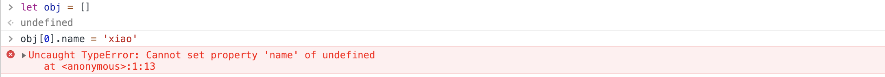
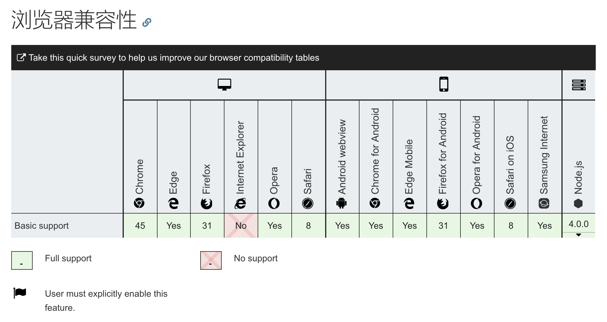

<!DOCTYPE html><html class="theme-next mist" lang="zh-Hans"><head><meta name="generator" content="Hexo 3.9.0"><meta charset="UTF-8"><meta name="baidu-site-verification" content="dil57BBbBc"><meta http-equiv="X-UA-Compatible" content="IE=edge"><meta name="viewport" content="width=device-width,initial-scale=1,maximum-scale=1"><meta name="theme-color" content="#222"><link rel="manifest" href="/manifest.json"><link rel="stylesheet" media="all" href="/lib/Han/dist/han.min.css?v=3.3"><meta http-equiv="Cache-Control" content="no-transform"><meta http-equiv="Cache-Control" content="no-siteapp"><meta name="google-site-verification" content="YH32omENY7b_BdEuIWv46jSBK-0Vyw_dWbJTGNBblT0"><link href="https://cdn.jsdelivr.net/gh/tonsky/FiraCode@1.206/distr/fira_code.css" rel="stylesheet" type="text/css"><link href="https://cdnjs.cloudflare.com/ajax/libs/font-awesome/4.7.0/css/font-awesome.min.css" rel="stylesheet" type="text/css"><link href="/css/main.css?v=5.1.4" rel="stylesheet" type="text/css"><link rel="apple-touch-icon" sizes="180x180" href="/images/favicon.ico?v=5.1.4"><link rel="icon" type="image/png" sizes="32x32" href="/images/favicon.ico?v=5.1.4"><link rel="icon" type="image/png" sizes="16x16" href="/images/favicon.ico?v=5.1.4"><link rel="icon" type="image/png" sizes="16x16" href="/images/favicon.ico?v=5.1.4"><link rel="icon" type="image/png" sizes="16x16" href="/images/favicon.ico?v=5.1.4"><link rel="icon" type="image/png" sizes="16x16" href="/images/favicon.ico?v=5.1.4"><meta name="keywords" content="空对象数组,"><meta name="description" content="初始化空对象数组在给对象设置属性时, 如果对象不存在很容易报错.有些场景, 在对对象数组处理时, 设置对象属性前判断对象是否存在. 与其这样, 还不如直接初始化为空对象数组.9个考生就来了6个考试时, 每个考生都有自己位置. 考生对照着可以很容易在考场里找到自己的座位. 秉着公平、公正、公开的原则, 考生被稀疏地散布在考场的各个角落. 假设考场 3*3 排列, 考生的信息:12345"><meta name="keywords" content="空对象数组"><meta property="og:type" content="article"><meta property="og:title" content="初始化空对象数组"><meta property="og:url" content="https://yexiaochen.github.io/初始化空对象数组/index.html"><meta property="og:site_name" content="贪空"><meta property="og:description" content="初始化空对象数组在给对象设置属性时, 如果对象不存在很容易报错.有些场景, 在对对象数组处理时, 设置对象属性前判断对象是否存在. 与其这样, 还不如直接初始化为空对象数组.9个考生就来了6个考试时, 每个考生都有自己位置. 考生对照着可以很容易在考场里找到自己的座位. 秉着公平、公正、公开的原则, 考生被稀疏地散布在考场的各个角落. 假设考场 3*3 排列, 考生的信息:12345"><meta property="og:locale" content="zh-Hans"><meta property="og:image" content="https://yexiaochen.github.io/images/property.png"><meta property="og:image" content="https://yexiaochen.github.io/images/Array.prototype.fill.png"><meta property="og:updated_time" content="2023-02-06T15:13:57.269Z"><meta name="twitter:card" content="summary"><meta name="twitter:title" content="初始化空对象数组"><meta name="twitter:description" content="初始化空对象数组在给对象设置属性时, 如果对象不存在很容易报错.有些场景, 在对对象数组处理时, 设置对象属性前判断对象是否存在. 与其这样, 还不如直接初始化为空对象数组.9个考生就来了6个考试时, 每个考生都有自己位置. 考生对照着可以很容易在考场里找到自己的座位. 秉着公平、公正、公开的原则, 考生被稀疏地散布在考场的各个角落. 假设考场 3*3 排列, 考生的信息:12345"><meta name="twitter:image" content="https://yexiaochen.github.io/images/property.png"><script type="text/javascript" id="hexo.configurations">var NexT=window.NexT||{},CONFIG={root:"/",scheme:"Mist",version:"5.1.4",sidebar:{position:"left",display:"hide",offset:12,b2t:!1,scrollpercent:!1,onmobile:!0},fancybox:!1,tabs:!0,motion:{enable:!1,async:!1,transition:{post_block:"fadeIn",post_header:"slideDownIn",post_body:"slideDownIn",coll_header:"slideLeftIn",sidebar:"slideUpIn"}},duoshuo:{userId:"0",author:"博主"},algolia:{applicationID:"",apiKey:"",indexName:"",hits:{per_page:10},labels:{input_placeholder:"Search for Posts",hits_empty:"We didn't find any results for the search: ${query}",hits_stats:"${hits} results found in ${time} ms"}}}</script><link rel="canonical" href="https://yexiaochen.github.io/初始化空对象数组/"><title>初始化空对象数组 | 贪空</title><script type="text/javascript">var _hmt=_hmt||[];!function(){var e=document.createElement("script");e.src="https://hm.baidu.com/hm.js?7503c6e413a2a7205320ec2396c811d0";var t=document.getElementsByTagName("script")[0];t.parentNode.insertBefore(e,t)}()</script></head><body itemscope itemtype="http://schema.org/WebPage" lang="zh-Hans"><div class="container sidebar-position-left page-post-detail"><div class="headband"></div><header id="header" class="header" itemscope itemtype="http://schema.org/WPHeader"><div class="header-inner"><div class="site-brand-wrapper"><div class="site-meta"><div class="custom-logo-site-title"><a href="/" class="brand" rel="start"><span class="logo-line-before"><i></i></span> <span class="site-title">贪空</span> <span class="logo-line-after"><i></i></span></a></div><h1 class="site-subtitle" itemprop="description">贪空 Blog</h1></div><div class="site-nav-toggle"><button><span class="btn-bar"></span> <span class="btn-bar"></span> <span class="btn-bar"></span></button></div></div><nav class="site-nav"><ul id="menu" class="menu"><li class="menu-item menu-item-home"><a href="/" rel="section"><i class="menu-item-icon fa fa-fw fa-home"></i><br>首页</a></li><li class="menu-item menu-item-tags"><a href="/tags/" rel="section"><i class="menu-item-icon fa fa-fw fa-tags"></i><br>标签</a></li><li class="menu-item menu-item-categories"><a href="/categories/" rel="section"><i class="menu-item-icon fa fa-fw fa-th"></i><br>分类</a></li><li class="menu-item menu-item-archives"><a href="/archives/" rel="section"><i class="menu-item-icon fa fa-fw fa-archive"></i><br>归档</a></li></ul></nav></div></header><main id="main" class="main"><div class="main-inner"><div class="content-wrap"><div id="content" class="content"><div id="posts" class="posts-expand"><article class="post post-type-normal" itemscope itemtype="http://schema.org/Article"><div class="post-block"><link itemprop="mainEntityOfPage" href="https://yexiaochen.github.io/初始化空对象数组/"><span hidden itemprop="author" itemscope itemtype="http://schema.org/Person"><meta itemprop="name" content="贪空"><meta itemprop="description" content><meta itemprop="image" content="/images/avatar.jpeg"></span><span hidden itemprop="publisher" itemscope itemtype="http://schema.org/Organization"><meta itemprop="name" content="贪空"></span><header class="post-header"><h2 class="post-title" itemprop="name headline">初始化空对象数组</h2><div class="post-meta"><span class="post-time"><span class="post-meta-item-icon"><i class="fa fa-calendar-o"></i> </span><span class="post-meta-item-text">发表于</span> <time title="创建于" itemprop="dateCreated datePublished" datetime="2019-01-19T22:02:17+08:00">2019-01-19 </time><span class="post-meta-divider">|</span> <span class="post-meta-item-icon"><i class="fa fa-calendar-check-o"></i> </span><span class="post-meta-item-text">更新于&#58;</span> <time title="更新于" itemprop="dateModified" datetime="2023-02-06T23:13:57+08:00">2023-02-06 </time></span><span class="post-category"><span class="post-meta-divider">|</span> <span class="post-meta-item-icon"><i class="fa fa-folder-o"></i> </span><span class="post-meta-item-text">分类于</span> <span itemprop="about" itemscope itemtype="http://schema.org/Thing"><a href="/categories/开发三两事/" itemprop="url" rel="index"><span itemprop="name">开发三两事</span></a></span></span><div class="post-wordcount"><span class="post-meta-item-icon"><i class="fa fa-file-word-o"></i> </span><span class="post-meta-item-text">字数统计&#58;</span> <span title="字数统计">1,829 字 </span><span class="post-meta-divider">|</span> <span class="post-meta-item-icon"><i class="fa fa-clock-o"></i> </span><span class="post-meta-item-text">阅读时长 &asymp;</span> <span title="阅读时长">7 分钟</span></div></div></header><div class="post-body han-init-context" itemprop="articleBody"><h1 id="初始化空对象数组"><a href="#初始化空对象数组" class="headerlink" title="初始化空对象数组"></a>初始化空对象数组</h1><blockquote><p>在给对象设置属性时, 如果对象不存在很容易报错.</p><p></p><p>有些场景, 在对对象数组处理时, 设置对象属性前判断对象是否存在. 与其这样, 还不如直接初始化为空对象数组.</p></blockquote><h2 id="9个考生就来了6个"><a href="#9个考生就来了6个" class="headerlink" title="9个考生就来了6个"></a>9个考生就来了6个</h2><hr><pre><code>考试时, 每个考生都有自己位置. 考生对照着可以很容易在考场里找到自己的座位.
秉着公平、公正、公开的原则, 考生被稀疏地散布在考场的各个角落.
</code></pre><p>假设考场 3*3 排列, 考生的信息:</p><figure class="highlight json"><table><tr><td class="gutter"><pre><span class="line">1</span><br><span class="line">2</span><br><span class="line">3</span><br><span class="line">4</span><br><span class="line">5</span><br><span class="line">6</span><br></pre></td><td class="code"><pre><span class="line">[&#123;<span class="attr">"row"</span>:<span class="number">1</span>,<span class="attr">"col"</span>:<span class="number">1</span>,<span class="attr">"name"</span>:<span class="string">"Ada"</span>&#125;,</span><br><span class="line"> &#123;<span class="attr">"row"</span>:<span class="number">3</span>,<span class="attr">"col"</span>:<span class="number">3</span>,<span class="attr">"name"</span>:<span class="string">"Aaron"</span>&#125;,</span><br><span class="line"> &#123;<span class="attr">"row"</span>:<span class="number">1</span>,<span class="attr">"col"</span>:<span class="number">2</span>,<span class="attr">"name"</span>:<span class="string">"Aditi"</span>&#125;,</span><br><span class="line"> &#123;<span class="attr">"row"</span>:<span class="number">3</span>,<span class="attr">"col"</span>:<span class="number">2</span>,<span class="attr">"name"</span>:<span class="string">"Aditi"</span>&#125;,</span><br><span class="line"> &#123;<span class="attr">"row"</span>:<span class="number">1</span>,<span class="attr">"col"</span>:<span class="number">3</span>,<span class="attr">"name"</span>:<span class="string">"Aditi"</span>&#125;,</span><br><span class="line"> &#123;<span class="attr">"row"</span>:<span class="number">3</span>,<span class="attr">"col"</span>:<span class="number">1</span>,<span class="attr">"name"</span>:<span class="string">"Abbott"</span>&#125;]</span><br></pre></td></tr></table></figure><p>将考场位置做成一个表格, 对考生位置按排统计, 来标注考生出勤情况.</p><figure class="highlight json"><table><tr><td class="gutter"><pre><span class="line">1</span><br><span class="line">2</span><br><span class="line">3</span><br></pre></td><td class="code"><pre><span class="line">[&#123;<span class="attr">"row"</span>:<span class="number">1</span>,<span class="attr">"col_1"</span>:<span class="string">"Ada"</span>,<span class="attr">"col_2"</span>:<span class="string">"Aditi"</span>,<span class="attr">"col_3"</span>:<span class="string">"Aditi"</span>&#125;,</span><br><span class="line"> &#123;&#125;,</span><br><span class="line"> &#123;<span class="attr">"row"</span>:<span class="number">3</span>,<span class="attr">"col_3"</span>:<span class="string">"Aaron"</span>,<span class="attr">"col_2"</span>:<span class="string">"Aditi"</span>,<span class="attr">"col_1"</span>:<span class="string">"Abbott"</span>&#125;]</span><br></pre></td></tr></table></figure><p><em>(为嘛没有第二排? 自知考不过, 缺考了呗🙁)</em><br>开发中, 对原始数据进行处理是一件很平常的事. so, 这个数据的处理应该很简单…吧😅</p><h2 id="Array-3-fill-试一波"><a href="#Array-3-fill-试一波" class="headerlink" title="Array(3).fill({}) 试一波"></a><code>Array(3).fill({})</code> 试一波</h2><hr><blockquote><p>如何初始化空对象数组?</p></blockquote><p>原始数据是以学生个体的信息存储展示的, 现在则按排为单位对数据进行处理. 理所当然的会想到先初始化三个空对象数组.</p><figure class="highlight javascript"><table><tr><td class="gutter"><pre><span class="line">1</span><br><span class="line">2</span><br><span class="line">3</span><br></pre></td><td class="code"><pre><span class="line"><span class="keyword">let</span> studentRow = <span class="built_in">Array</span>(<span class="number">3</span>).fill(&#123;&#125;)</span><br><span class="line"><span class="comment">// &gt; studentRow</span></span><br><span class="line"><span class="comment">// [ &#123;&#125;, &#123;&#125;, &#123;&#125; ]</span></span><br></pre></td></tr></table></figure><p>动作很快姿势很帅. 不过, 这样真的可以么? 长得倒是像那么一回事, 可实际上完全行不通. <code>Array.prototype.fill()</code> 的用法是, 指定某个值来填充数组.<br>也就是说, <code>{}</code> 在 studentRow 里复制了三次. 如果是简单类型值倒也罢了, 但是换做复杂类型值, 修改每一个 <code>{}</code> , 都会影响其它的 <code>{}</code>. 因为它们都是对同一个对象的引用.</p><figure class="highlight javascript"><table><tr><td class="gutter"><pre><span class="line">1</span><br><span class="line">2</span><br><span class="line">3</span><br><span class="line">4</span><br><span class="line">5</span><br><span class="line">6</span><br><span class="line">7</span><br><span class="line">8</span><br><span class="line">9</span><br><span class="line">10</span><br><span class="line">11</span><br><span class="line">12</span><br><span class="line">13</span><br><span class="line">14</span><br><span class="line">15</span><br><span class="line">16</span><br><span class="line">17</span><br></pre></td><td class="code"><pre><span class="line"><span class="keyword">let</span> studentRow = <span class="built_in">Array</span>(<span class="number">3</span>).fill(&#123;&#125;);</span><br><span class="line">studentRow[<span class="number">0</span>].name = <span class="string">'tony'</span>;</span><br><span class="line"><span class="comment">// &gt; studentRow</span></span><br><span class="line"><span class="comment">// [ &#123; name: 'tony' &#125;,</span></span><br><span class="line"><span class="comment">//   &#123; name: 'tony' &#125;,</span></span><br><span class="line"><span class="comment">//   &#123; name: 'tony' &#125; ]</span></span><br><span class="line"></span><br><span class="line"><span class="comment">// 等同于</span></span><br><span class="line"><span class="keyword">let</span> obj = &#123;&#125;;</span><br><span class="line"><span class="keyword">let</span> studentRow = <span class="built_in">Array</span>(<span class="number">3</span>).fill(obj);</span><br><span class="line"><span class="comment">// &gt; studentRow</span></span><br><span class="line"><span class="comment">// &#123;obj, obj, obj&#125;</span></span><br><span class="line">studentRow[<span class="number">0</span>].name = <span class="string">'tony'</span>;</span><br><span class="line"><span class="comment">// &gt; studentRow</span></span><br><span class="line"><span class="comment">// [ &#123; name: 'tony' &#125;,</span></span><br><span class="line"><span class="comment">//   &#123; name: 'tony' &#125;,</span></span><br><span class="line"><span class="comment">//   &#123; name: 'tony' &#125; ]</span></span><br></pre></td></tr></table></figure><p><strong>知识点:</strong></p><ul><li>将一个值赋予变量时, 解析器必须确定这个值是基本类型值还是复杂类型值.</li><li>当是复杂类型值时, 变量里保存的是该复杂类型值在堆中的一个指针. 复制的是变量的指针, 操作的却是实际的对象.</li></ul><h2 id="Array-3-和-map-gt-结合有问题"><a href="#Array-3-和-map-gt-结合有问题" class="headerlink" title="Array(3) 和 map(() =&gt; {}) 结合有问题"></a><code>Array(3)</code> 和 <code>map(() =&gt; {})</code> 结合有问题</h2><hr><blockquote><p><code>Array(3).fill({})</code> 行不通. 那么, <code>Array(3).map(() =&gt; {})</code>?</p></blockquote><p>如果说 <code>Array(3).fill({})</code> 不可行, 是因为三个空对象是对同一个对象的引用. 那么我们就设法返回三个不同的空对象.</p><figure class="highlight javascript"><table><tr><td class="gutter"><pre><span class="line">1</span><br><span class="line">2</span><br><span class="line">3</span><br></pre></td><td class="code"><pre><span class="line"><span class="keyword">let</span> studentRow = <span class="built_in">Array</span>(<span class="number">3</span>).map(<span class="function"><span class="params">()</span> =&gt;</span> &#123;&#125;);</span><br><span class="line"><span class="comment">// &gt; studentRow</span></span><br><span class="line"><span class="comment">// [ &lt;3 empty items&gt; ]</span></span><br></pre></td></tr></table></figure><p>结果很失望, 这个表达式就干了两件事, <code>Array(3)</code> 和 <code>map(() =&gt; {})</code>. 所以问题很好排查.</p><figure class="highlight javascript"><table><tr><td class="gutter"><pre><span class="line">1</span><br><span class="line">2</span><br><span class="line">3</span><br></pre></td><td class="code"><pre><span class="line"><span class="keyword">let</span> arr = <span class="built_in">Array</span>(<span class="number">3</span>);</span><br><span class="line"><span class="comment">// &gt; arr</span></span><br><span class="line"><span class="comment">// [ &lt;3 empty items&gt; ]</span></span><br></pre></td></tr></table></figure><p>对于数组中并不存在的单元, <code>map()</code> 也是束手无策.</p><blockquote><p>我说: 肚里要有货🙏</p></blockquote><p>肚里没货, 我们就造一些. <code>Array.prototype.fill()</code> 又有出头之日了.</p><figure class="highlight javascript"><table><tr><td class="gutter"><pre><span class="line">1</span><br><span class="line">2</span><br><span class="line">3</span><br></pre></td><td class="code"><pre><span class="line"><span class="keyword">let</span> studentRow = <span class="built_in">Array</span>(<span class="number">3</span>).fill(<span class="literal">undefined</span>);</span><br><span class="line"><span class="comment">// &gt; studentRow</span></span><br><span class="line"><span class="comment">// [ undefined, undefined, undefined ]</span></span><br></pre></td></tr></table></figure><p><strong>警告:</strong></p><ul><li><p>如若一个数组没有任何单元, 但它的 length 属性中却显示有单元数量, 这样奇特的数据结构会导致一些怪异的行为. 我们将包含至少一个 “空单元” 的数组称之为 “稀疏数组”. undefined 单元非 “空单元”.</p></li><li><p>永远不要创建和使用空单元数组.</p></li></ul><h2 id="箭头函数中的-return"><a href="#箭头函数中的-return" class="headerlink" title="箭头函数中的 return"></a>箭头函数中的 <code>return</code></h2><hr><blockquote><p>你以为 <code>Array(3).fill(undefined).map(() =&gt; {})</code> 就完事了? 图样图森破 👼</p></blockquote><figure class="highlight javascript"><table><tr><td class="gutter"><pre><span class="line">1</span><br><span class="line">2</span><br><span class="line">3</span><br></pre></td><td class="code"><pre><span class="line"><span class="keyword">let</span> studentRow = <span class="built_in">Array</span>(<span class="number">3</span>).fill(<span class="literal">undefined</span>).map(<span class="function"><span class="params">()</span> =&gt;</span> &#123;&#125;);</span><br><span class="line"><span class="comment">// &gt; studentRow</span></span><br><span class="line"><span class="comment">// [ undefined, undefined, undefined ]</span></span><br></pre></td></tr></table></figure><blockquote><p>哦, 我知道了, 你没有 return 啊</p></blockquote><p>额, 这和 return 没有关系. 不信你可以加一个试试😏<br>其实, <code>{}</code> 在这里被视作语法块了, 没有任何意义. 可恨就可恨在, 它和空对象长得一摸一样.<br>既然这样, 那我们就不用字面量定义一个空对象了.</p><figure class="highlight javascript"><table><tr><td class="gutter"><pre><span class="line">1</span><br><span class="line">2</span><br><span class="line">3</span><br><span class="line">4</span><br></pre></td><td class="code"><pre><span class="line"><span class="keyword">let</span> studentRow = <span class="built_in">Array</span>(<span class="number">3</span>).fill(<span class="literal">undefined</span>).map(<span class="function"><span class="params">()</span> =&gt;</span> <span class="built_in">Object</span>.create(<span class="literal">null</span>));</span><br><span class="line">studentRow[<span class="number">0</span>].name = <span class="string">'tony'</span>;</span><br><span class="line"><span class="comment">// &gt; studentRow</span></span><br><span class="line"><span class="comment">// [ &#123; name: 'tony' &#125;, &#123;&#125;, &#123;&#125; ]</span></span><br></pre></td></tr></table></figure><p>这样就达到初始化对象数组的目的了. 可是, <code>Array(3).fill(undefined).map(() =&gt; {})</code> 为什么行不通, 如何补救?</p><blockquote><p>规避问题在某种意义上不等于解决问题.</p></blockquote><p><code>{...}</code> 里面的代码会被解析为一系列语句. <code>{}</code> 也因此不能达到我们预期的结果. 所以, 我们可以用 <code>(...)</code> 将 <code>{}</code> 包装成表达式, 即 <code>({})</code>.</p><figure class="highlight javascript"><table><tr><td class="gutter"><pre><span class="line">1</span><br><span class="line">2</span><br><span class="line">3</span><br><span class="line">4</span><br></pre></td><td class="code"><pre><span class="line"><span class="keyword">let</span> studentRow = <span class="built_in">Array</span>(<span class="number">3</span>).fill(<span class="literal">undefined</span>).map(<span class="function"><span class="params">()</span> =&gt;</span> (&#123;&#125;));</span><br><span class="line">studentRow[<span class="number">0</span>].name = <span class="string">'tony'</span>;</span><br><span class="line"><span class="comment">// &gt; studentRow</span></span><br><span class="line"><span class="comment">// [ &#123; name: 'tony' &#125;, &#123;&#125;, &#123;&#125; ]</span></span><br></pre></td></tr></table></figure><p><strong>知识点:</strong></p><ul><li><p>若函数体的表达式个数多于一个, 或者函数题包含非表达式语句的时候才需要用 <code>{...}</code> 包裹.</p></li><li><p>如果只有一个表达式, 并且省略了 <code>{...}</code> 的话, 则附加一个隐式 return. 若在块体内需要指定返回值, 则需要明确的 return.</p></li><li><p>箭头函数提供了简练的语法, 但不是普通函数的替代品. 箭头函数的主要设计目的是改变 this 的行为. 普通函数内的 this 是动态绑定, this 指向谁取决于调用者. 而箭头函数里的 this 是基于作用域的, 是可预测的.(可参考<a href="http://yexiaochen.github.io/%E4%BB%8E%E6%B8%B8%E6%88%8F%E8%A7%92%E5%BA%A6%E8%AF%B4%E4%BD%9C%E7%94%A8%E5%9F%9F/">从游戏角度说作用域</a>).</p></li></ul><h2 id="令人绝望的Array-prototype-fill"><a href="#令人绝望的Array-prototype-fill" class="headerlink" title="令人绝望的Array.prototype.fill()"></a>令人绝望的<code>Array.prototype.fill()</code></h2><hr><blockquote><p>你以为结束了, 其实才刚刚开始</p></blockquote><p>这是真正的开始, 没看错, 是的, 我们之前所做的可能都是无用功.</p><p></p><p>是的, IE 是魔鬼. 费尽了周折, 才发现一切都是徒劳.<br>难道就这么放弃了?</p><blockquote><p>‘放弃’能吃么? 能吃就吃了它, 啥? 不能吃?!? 提它作甚!!!</p></blockquote><p><code>Array.prototype.fill()</code> 方便之处就是能够简便填充数组. 此法不行, 另寻他法.</p><h2 id="Function-prototype-apply-了解一下"><a href="#Function-prototype-apply-了解一下" class="headerlink" title="Function.prototype.apply() 了解一下"></a><code>Function.prototype.apply()</code> 了解一下</h2><hr><p><code>Function.prototype.apply()</code> 入参有两个. 第一个参数是 <strong>函数方法</strong> 的调用者, 第二个参数是 <strong>函数方法</strong> 的入参(要区分入参和入参的不同). <strong>函数方法</strong> 的入参可以是数组也可以是类数组. 我们的目的就是填充数组, 所以我们要在类数组上做文章. 就拿 <code>console.log</code> 做例子🌰. (直接复制我之前的博客内容😌).</p><figure class="highlight javascript"><table><tr><td class="gutter"><pre><span class="line">1</span><br><span class="line">2</span><br><span class="line">3</span><br><span class="line">4</span><br><span class="line">5</span><br><span class="line">6</span><br><span class="line">7</span><br><span class="line">8</span><br><span class="line">9</span><br><span class="line">10</span><br><span class="line">11</span><br><span class="line">12</span><br><span class="line">13</span><br><span class="line">14</span><br><span class="line">15</span><br><span class="line">16</span><br><span class="line">17</span><br></pre></td><td class="code"><pre><span class="line"><span class="function"><span class="keyword">function</span> <span class="title">log_1</span>(<span class="params">arg</span>) </span>&#123;</span><br><span class="line"><span class="built_in">console</span>.log(arg)</span><br><span class="line">&#125;</span><br><span class="line">log_1(<span class="number">1</span>);</span><br><span class="line">log_1(<span class="number">1</span>,<span class="number">2</span>,<span class="number">3</span>);</span><br><span class="line"><span class="comment">// 1</span></span><br><span class="line"><span class="comment">// 1</span></span><br><span class="line"></span><br><span class="line"><span class="comment">// 改造下</span></span><br><span class="line"><span class="function"><span class="keyword">function</span> <span class="title">log_2</span>(<span class="params"></span>) </span>&#123;</span><br><span class="line">    <span class="keyword">const</span> log = <span class="built_in">console</span>.log;</span><br><span class="line">    log.apply(<span class="literal">null</span>, <span class="built_in">arguments</span>)</span><br><span class="line">&#125;</span><br><span class="line">log_2(<span class="number">1</span>);</span><br><span class="line">log_2(<span class="number">1</span>, <span class="number">2</span>, <span class="number">3</span>)</span><br><span class="line"><span class="comment">// 1</span></span><br><span class="line"><span class="comment">// 1 2 3</span></span><br></pre></td></tr></table></figure><p>这是 <code>Function.prototype.apply()</code> 使用的方法. 如果我们把 log_2 里的 arguments 换成 <code>{length: 3}</code>,</p><figure class="highlight javascript"><table><tr><td class="gutter"><pre><span class="line">1</span><br><span class="line">2</span><br><span class="line">3</span><br><span class="line">4</span><br><span class="line">5</span><br><span class="line">6</span><br></pre></td><td class="code"><pre><span class="line"><span class="function"><span class="keyword">function</span> <span class="title">log_2</span>(<span class="params"></span>) </span>&#123;</span><br><span class="line">    <span class="keyword">const</span> log = <span class="built_in">console</span>.log;</span><br><span class="line">    log.apply(<span class="literal">null</span>, &#123;<span class="attr">length</span>: <span class="number">3</span>&#125;)</span><br><span class="line">&#125;</span><br><span class="line">log_2()</span><br><span class="line"><span class="comment">// undefined undefined undefined</span></span><br></pre></td></tr></table></figure><p><code>{length: 3}</code> 和 <code>[undefined, undefined, undefined]</code> 在传入 <code>apply(null;...)</code> 后, 在参数的处理上, 最后的结果是一样的.<br>那么, <code>Array(3).fill(undefined).map(() =&gt; ({}))</code> 可改造成,</p><figure class="highlight javascript"><table><tr><td class="gutter"><pre><span class="line">1</span><br><span class="line">2</span><br><span class="line">3</span><br><span class="line">4</span><br></pre></td><td class="code"><pre><span class="line"><span class="keyword">let</span> studentRow = <span class="built_in">Array</span>.apply(<span class="literal">null</span>, &#123;<span class="attr">length</span>: <span class="number">3</span>&#125;).map(<span class="function"><span class="params">()</span> =&gt;</span> (&#123;&#125;));</span><br><span class="line">studentRow[<span class="number">0</span>].name = <span class="string">'tony'</span>;</span><br><span class="line"><span class="comment">// &gt; studentRow</span></span><br><span class="line"><span class="comment">// [ &#123; name: 'tony' &#125;, &#123;&#125;, &#123;&#125; ]</span></span><br></pre></td></tr></table></figure><p>在这里 Array 作为普通函数调用, 以上等同于</p><figure class="highlight javascript"><table><tr><td class="gutter"><pre><span class="line">1</span><br><span class="line">2</span><br><span class="line">3</span><br></pre></td><td class="code"><pre><span class="line"><span class="keyword">let</span> studentRow = <span class="built_in">Array</span>(<span class="literal">undefined</span>, <span class="literal">undefined</span>, <span class="literal">undefined</span>);</span><br><span class="line"><span class="comment">// &gt; studentRow</span></span><br><span class="line"><span class="comment">// [ undefined, undefined, undefined ]</span></span><br></pre></td></tr></table></figure><h2 id="收尾"><a href="#收尾" class="headerlink" title="收尾"></a>收尾</h2><hr><p>只是初始化一个空对象数组, 结果整出这么多幺蛾子.<br>处理数据其实就那么几行代码. 大致长这模样,</p><figure class="highlight javascript"><table><tr><td class="gutter"><pre><span class="line">1</span><br><span class="line">2</span><br><span class="line">3</span><br><span class="line">4</span><br><span class="line">5</span><br><span class="line">6</span><br><span class="line">7</span><br><span class="line">8</span><br></pre></td><td class="code"><pre><span class="line"><span class="function"><span class="keyword">function</span> <span class="title">handleData</span>(<span class="params">params</span>) </span>&#123;</span><br><span class="line">    <span class="keyword">const</span> studentRow = <span class="built_in">Array</span>.apply(<span class="literal">null</span>, &#123;<span class="attr">length</span>: <span class="number">3</span>&#125;).map(<span class="function"><span class="params">()</span> =&gt;</span> (&#123;&#125;));</span><br><span class="line">    params.forEach(<span class="function"><span class="params">item</span> =&gt;</span> &#123;</span><br><span class="line">    studentRow[item.row<span class="number">-1</span>][<span class="string">`row`</span>] = item.row;</span><br><span class="line">    studentRow[item.row<span class="number">-1</span>][<span class="string">`col_<span class="subst">$&#123;item.col&#125;</span>`</span>] = item.name;</span><br><span class="line">    &#125;)</span><br><span class="line">    <span class="keyword">return</span> studentRow;</span><br><span class="line">&#125;</span><br></pre></td></tr></table></figure></div><div><div><div style="text-align:center;color:#555;font-size:18px">------------- The End -------------</div></div></div><div><ul class="post-copyright"><li class="post-copyright-author"><strong>本文作者：</strong> 贪空</li><li class="post-copyright-link"><strong>本文链接：</strong> <a href="https://yexiaochen.github.io/初始化空对象数组/" title="初始化空对象数组">https://yexiaochen.github.io/初始化空对象数组/</a></li><li class="post-copyright-license"><strong>版权声明： </strong>本博客所有文章除特别声明外，均采用 <a href="https://creativecommons.org/licenses/by-nc-sa/3.0/" rel="external nofollow noopener noreferrer" target="_blank">CC BY-NC-SA 3.0</a> 许可协议。转载请注明出处！</li></ul></div><footer class="post-footer"><div class="post-tags"><a href="/tags/空对象数组/" rel="tag"><i class="fa fa-tag"></i> 空对象数组</a></div><div class="post-nav"><div class="post-nav-next post-nav-item"><a href="/从游戏角度说作用域/" rel="next" title="从游戏角度说作用域"><i class="fa fa-chevron-left"></i> 从游戏角度说作用域</a></div><span class="post-nav-divider"></span><div class="post-nav-prev post-nav-item"><a href="/咬文嚼字说策略/" rel="prev" title="咬文嚼字说策略">咬文嚼字说策略 <i class="fa fa-chevron-right"></i></a></div></div></footer></div></article><div class="post-spread"></div></div></div><div class="comments" id="comments"><div onclick="showGitment()" id="gitment-display-button">显示评论</div><div id="gitment-container" style="display:none"></div></div></div><div class="sidebar-toggle"><div class="sidebar-toggle-line-wrap"><span class="sidebar-toggle-line sidebar-toggle-line-first"></span> <span class="sidebar-toggle-line sidebar-toggle-line-middle"></span> <span class="sidebar-toggle-line sidebar-toggle-line-last"></span></div></div><aside id="sidebar" class="sidebar"><div id="sidebar-dimmer"></div><div class="sidebar-inner"><ul class="sidebar-nav motion-element"><li class="sidebar-nav-toc sidebar-nav-active" data-target="post-toc-wrap">文章目录</li><li class="sidebar-nav-overview" data-target="site-overview-wrap">站点概览</li></ul><section class="site-overview-wrap sidebar-panel"><div class="site-overview"><div class="site-author motion-element" itemprop="author" itemscope itemtype="http://schema.org/Person"><p class="site-author-name" itemprop="name">贪空</p><p class="site-description motion-element" itemprop="description"></p></div><nav class="site-state motion-element"><div class="site-state-item site-state-posts"><a href="/archives/"><span class="site-state-item-count">68</span> <span class="site-state-item-name">日志</span></a></div><div class="site-state-item site-state-categories"><a href="/categories/index.html"><span class="site-state-item-count">11</span> <span class="site-state-item-name">分类</span></a></div><div class="site-state-item site-state-tags"><a href="/tags/index.html"><span class="site-state-item-count">118</span> <span class="site-state-item-name">标签</span></a></div></nav><div class="links-of-author motion-element"><span class="links-of-author-item"><a href="mailto:2277438436@qq.com" target="_blank" title="E-Mail" rel="external nofollow noopener noreferrer"><i class="fa fa-fw fa-envelope"></i>E-Mail</a></span></div></div></section><section class="post-toc-wrap motion-element sidebar-panel sidebar-panel-active"><div class="post-toc"><div class="post-toc-content"><ol class="nav"><li class="nav-item nav-level-1"><a class="nav-link" href="#初始化空对象数组"><span class="nav-number">1.</span> <span class="nav-text">初始化空对象数组</span></a><ol class="nav-child"><li class="nav-item nav-level-2"><a class="nav-link" href="#9个考生就来了6个"><span class="nav-number">1.1.</span> <span class="nav-text">9个考生就来了6个</span></a></li><li class="nav-item nav-level-2"><a class="nav-link" href="#Array-3-fill-试一波"><span class="nav-number">1.2.</span> <span class="nav-text">Array(3).fill({}) 试一波</span></a></li><li class="nav-item nav-level-2"><a class="nav-link" href="#Array-3-和-map-gt-结合有问题"><span class="nav-number">1.3.</span> <span class="nav-text">Array(3) 和 map(() =&gt; {}) 结合有问题</span></a></li><li class="nav-item nav-level-2"><a class="nav-link" href="#箭头函数中的-return"><span class="nav-number">1.4.</span> <span class="nav-text">箭头函数中的 return</span></a></li><li class="nav-item nav-level-2"><a class="nav-link" href="#令人绝望的Array-prototype-fill"><span class="nav-number">1.5.</span> <span class="nav-text">令人绝望的Array.prototype.fill()</span></a></li><li class="nav-item nav-level-2"><a class="nav-link" href="#Function-prototype-apply-了解一下"><span class="nav-number">1.6.</span> <span class="nav-text">Function.prototype.apply() 了解一下</span></a></li><li class="nav-item nav-level-2"><a class="nav-link" href="#收尾"><span class="nav-number">1.7.</span> <span class="nav-text">收尾</span></a></li></ol></li></ol></div></div></section></div></aside></div></main><footer id="footer" class="footer"><div class="footer-inner"><div class="copyright">&copy; 2018 &mdash; <span itemprop="copyrightYear">2023</span> <span class="with-love"><i class="fa fa-user"></i> </span><span class="author" itemprop="copyrightHolder">贪空</span></div></div></footer><div class="back-to-top"><i class="fa fa-arrow-up"></i></div></div><script type="text/javascript">"[object Function]"!==Object.prototype.toString.call(window.Promise)&&(window.Promise=null)</script><script type="text/javascript" src="https://cdnjs.cloudflare.com/ajax/libs/jquery/3.3.1/jquery.min.js"></script><script type="text/javascript" src="https://cdnjs.cloudflare.com/ajax/libs/fastclick/1.0.6/fastclick.min.js"></script><script type="text/javascript" src="https://cdnjs.cloudflare.com/ajax/libs/jquery_lazyload/1.9.7/jquery.lazyload.min.js"></script><script type="text/javascript" src="https://cdnjs.cloudflare.com/ajax/libs/velocity/1.2.1/velocity.min.js"></script><script type="text/javascript" src="https://cdnjs.cloudflare.com/ajax/libs/velocity/1.2.1/velocity.ui.min.js"></script><script type="text/javascript" src="/js/src/utils.js?v=5.1.4"></script><script type="text/javascript" src="/js/src/motion.js?v=5.1.4"></script><script type="text/javascript" src="/js/src/scrollspy.js?v=5.1.4"></script><script type="text/javascript" src="/js/src/post-details.js?v=5.1.4"></script><script type="text/javascript" src="/js/src/bootstrap.js?v=5.1.4"></script><link rel="stylesheet" href="https://cdn.jsdelivr.net/npm/gitalk@1/dist/gitalk.css"><script src="https://cdn.jsdelivr.net/npm/gitalk@1/dist/gitalk.min.js"></script><style>a.gitment-editor-footer-tip{display:none}.gitment-container.gitment-footer-container{display:none}</style><script type="text/javascript">function renderGitment(){new Gitalk({id:window.decodeURIComponent(window.location.pathname),owner:"yexiaochen",repo:"blogComments",distractionFreeMode:!1,admin:["yexiaochen"],clientSecret:"5df7f4f6edb8a65fef2d0cf7cb6fa40b04a44525",clientID:"fad749b2b67be41f767a"}).render("gitment-container")}function showGitment(){document.getElementById("gitment-display-button").style.display="none",document.getElementById("gitment-container").style.display="block",renderGitment()}</script><script>!function(){var t=document.createElement("script"),e=window.location.protocol.split(":")[0];t.src="https"===e?"https://zz.bdstatic.com/linksubmit/push.js":"http://push.zhanzhang.baidu.com/push.js";var s=document.getElementsByTagName("script")[0];s.parentNode.insertBefore(t,s)}()</script></body></html>